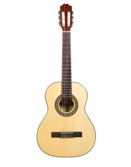
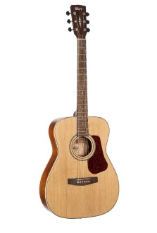
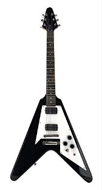

Je vais vous présenter la guitare que j’utilise habituellement
Classic Guitar
La guitare classique, également appelée guitare espagnole, est un membre de la famille des guitares utilisées dans la musique classique et d’autres styles. Instrument acoustique à cordes en bois avec cordes en boyau ou en nylon, il est un précurseur des guitares acoustiques et électriques modernes à cordes en acier, qui utilisent toutes deux des cordes en métal. Les guitares classiques proviennent de la vihuela espagnole et gittern des 15ème et 16ème siècles. Ces instruments ont évolué vers la guitare baroque des XVIIe et XVIIIe siècles et, au milieu du XIXe siècle, vers les premières formes de la guitare classique moderne. La guitare classique moderne d’aujourd’hui a été établie par les conceptions tardives du luthier espagnol du 19ème siècle, Antonio Torres Jurado.
Acoustic Guitar
Une guitare acoustique est un instrument de musique de la famille des cordes. Lorsqu’une corde est pincée, sa vibration est transmise par le chevalet, résonnant dans tout le haut de la guitare. Il est également transmis sur le côté et à l’arrière de l’instrument, résonnant dans l’air du corps et produisant un son à partir du trou sonore. [1] Bien que le terme général original pour cet instrument à cordes soit guitare, la guitare acoustique rétronyme – souvent utilisée à tort pour indiquer le modèle à cordes en acier – la distingue d’une guitare électrique, qui repose sur l’amplification électronique. Typiquement, le corps d’une guitare est une boîte de son, dont le côté supérieur sert de table de son qui améliore les sons de vibration des cordes. En accord standard, les six cordes de la guitare[2] sont accordées (de bas en haut) E2 A2 D3 G3 B3 E4.
Electric Guitar
Une guitare électrique est une guitare qui nécessite une amplification externe pour être entendue à des volumes de performance typiques, contrairement à une guitare acoustique standard. Il utilise un ou plusieurs micros pour convertir la vibration de ses cordes en signaux électriques, qui sont finalement reproduits sous forme sonore par des haut-parleurs. Le son est parfois façonné ou modifié électroniquement pour obtenir des timbres ou des qualités tonales différentes de celles d’une guitare acoustique via des réglages d’amplificateur ou des boutons sur la guitare. Souvent, cela se fait par l’utilisation d’effets tels que la réverbération, la distorsion et "overdrive"; ce dernier est considéré comme un élément clé de la musique de guitare blues électrique et du jazz, du rock et du heavy-metal. Il existe également des conceptions combinant les attributs des guitares électriques et acoustiques : les guitares semi-acoustiques et acoustiques-électriques.
